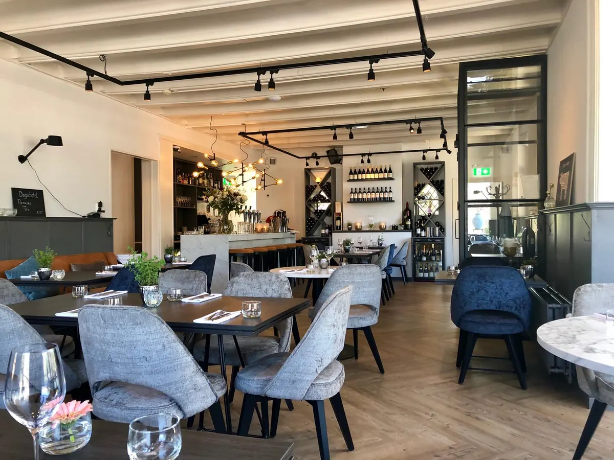

Restaurant
Restaurant Groenewoud

Zin om echt uitgebreid te tafelen in een pand met een lange geschiedenis? Aan de Groesbeekseweg, net buiten het centrum, vind je een restaurant in een karakteristiek pand dat teruggaat tot 1763. De keuken is Frans van basis, met moderne invloeden en veel aandacht voor wat het seizoen biedt.
Je kunt beginnen met oesters, bruschetta of kroketjes en daarna kiezen uit een keuzemenu van twee tot vijf gangen, of uit specialiteiten zoals zwezerik en côte de veau. Er is ook een uitgebreide wijnkaart. Kom je met een groep, dan kun je terecht in de serre met toegang tot het terras, in de zaal of in het aparte Koetshuis met een eigen bar.
Het restaurant is van dinsdag tot en met zondag open voor lunch en diner. Reserveer je tafel via de website en laat je verrassen.
Contact en openingstijden
- AdresGroesbeekseweg 227, 6525 NW Nijmegen Kaart
- Openingstijden
maandag gesloten dinsdag 12:00–22:00 woensdag 12:00–22:00 donderdag 12:00–22:00 vrijdag 12:00–22:00 zaterdag 12:00–22:00 zondag 12:00–22:00 - KeukenFrans
- Goed om te wetenterrasgroepenlunch
- Contactrestaurantgroenewoud.nl
0243224969
info@restaurantgroenewoud.nl
Instagram · Facebook - ReviewsBekijk de reviews op Google Maps
Hier vind je Restaurant Groenewoud
Kaart: © OpenStreetMap-bijdragers